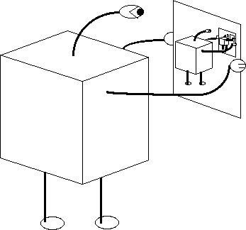

| Here is the perceived problem with machine self-reproduction. |
| * The machine must contain a blueprint of itself, a set of instructions on how to copy itself. |
| * But if the copy is to be able to reproduce itself, the copy will need its own set of instructions. |
| * That is, the original machine needs to make a copy of the itself, complete with blueprint. |
| * This means the blueprint must contain a copy of the blueprint, which must in turn contain a copy of the blueprint, and so on. We seem to encounter an infinte regress. |
|  |
| Why isn't this a good objection? |
Return to The Paradox of Self-Replicating Machines.